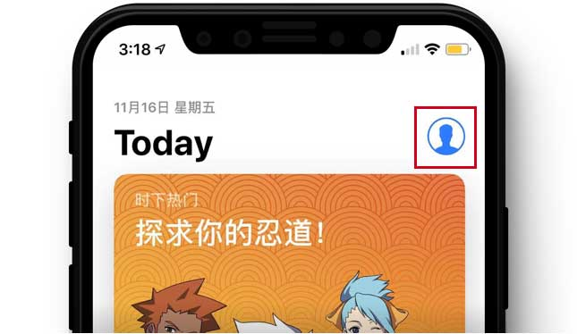
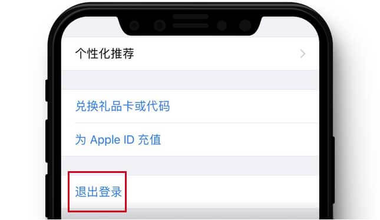
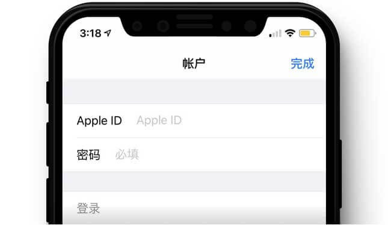
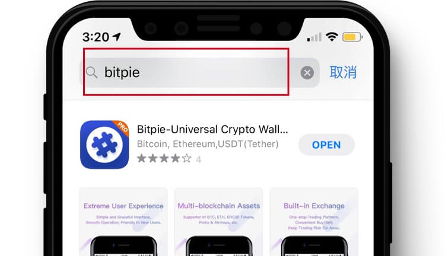
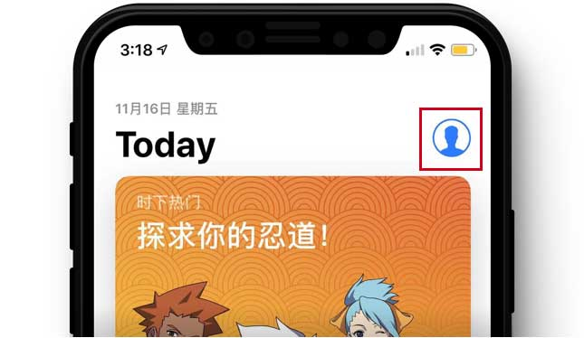
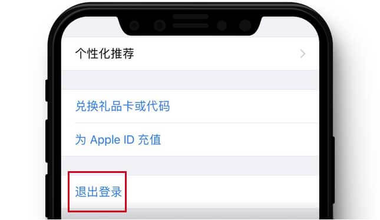
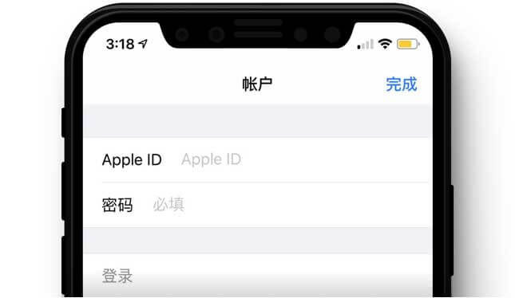
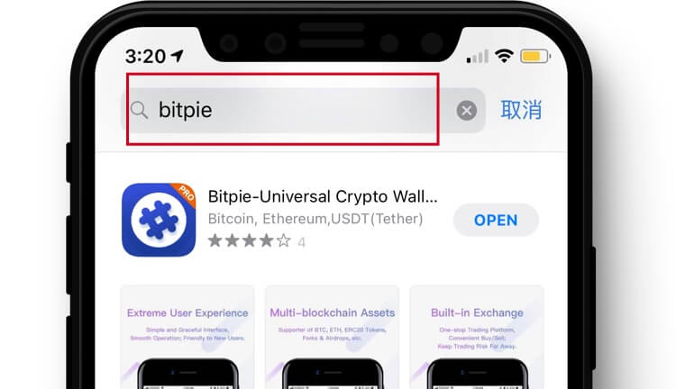

苹果 IOS 版本下载
全功能内测版 下载
*
若无法安装或任何原因需要卸载原版本，请先备份好助记词，并使用验证助记词功能验证无误后，再重新安装新版本。
苹果手机使用 海外 ID 下载比特派教程
1、打开 App Store,点击右上角个人中心
2、点击个人中心下方退出登录
3、登录 海外 ID
4、搜索 “bitpie” 下载带有“PRO”角标的为最新版本

苹果 IOS 版本下载
全功能内测版 下载
若无法安装或任何原因需要卸载原版本，请先备份好助记词，并使用验证助记词功能验证无误后，再重新安装新版本。
1、打开 App Store,点击右上角个人中心
2、点击个人中心下方退出登录
3、登录 海外 ID
4、搜索 “bitpie” 下载带有“PRO”角标的为最新版本
